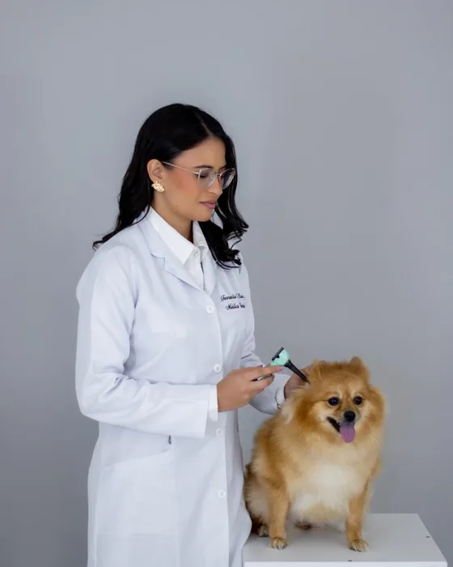
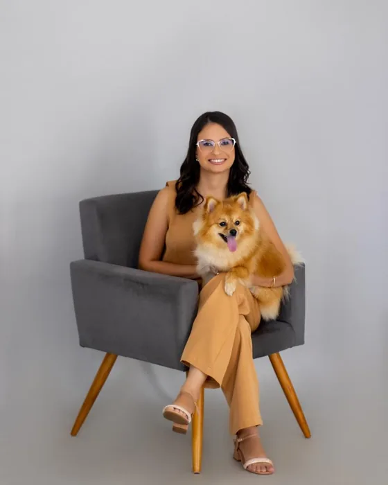

Consultas, exames e tratamentos
O que a Dra. Fernanda oferece para a pele, o pelo e os ouvidos de cães e gatos, da consulta ao acompanhamento.
Consulta
O ponto de partida de qualquer caso.
Consulta dermatológica
Cerca de uma hora para ouvir o histórico, examinar o pet e explicar o que foi encontrado. Somente com hora marcada. Como se preparar
Exames na consulta
Feitos durante o atendimento, com o resultado discutido na hora.

Otoscopia clínica
Exame do canal do ouvido com otoscópio, para ver inflamação, secreção e corpos estranhos.
Lâmpada de Wood
Luz ultravioleta que ajuda a triar alguns fungos causadores de dermatofitose.
Citologia de pele
Amostra da superfície da pele vista ao microscópio, para identificar bactérias, leveduras como a Malassezia e células inflamatórias.
Citologia de orelha
Amostra do ouvido vista ao microscópio, para identificar fungos, bactérias e ácaros.
Raspado cutâneo
Raspagem leve da pele para procurar ácaros, como os da sarna e da demodicose.
Outros exames
Indicados conforme o caso.

Tricograma
Pelos observados ao microscópio para avaliar raiz e haste, útil em queda de pelo e alopecia X. Ler sobre o tricograma
Biópsia de pele
Pequenos fragmentos de pele enviados para exame histopatológico, quando é preciso confirmar o diagnóstico.
Cultura fúngica e bacteriana
Identifica o fungo ou a bactéria envolvidos. A cultura bacteriana pode vir com antibiograma, que orienta a escolha do antibiótico.
Tratamentos e acompanhamento
Cada plano é montado depois da avaliação.

Tratamento de otites
Controle da inflamação e da infecção do ouvido e busca da causa que faz a otite voltar. Alergias e otites
Dermatite atópica e alergias
Acompanhamento com retornos para ajustar o tratamento e manter a coceira sob controle ao longo do tempo. Ler sobre dermatite atópica
Investigação de alergia alimentar
Dieta de eliminação orientada e acompanhada, seguida da reintrodução do alimento para confirmar o diagnóstico.
Fotobiomodulação
Luz de baixa intensidade aplicada sobre a lesão, que pode auxiliar na cicatrização e no controle da inflamação. Feridas
Terapia fotodinâmica
Substância fotossensibilizante combinada com luz, com ação contra bactérias e fungos, como apoio no tratamento de feridas e infecções de pele. Feridas
Microagulhamento e peeling de diamante
Técnicas que estimulam a pele e podem auxiliar no crescimento dos pelos em casos de alopecia X. Alopecia X
Agende pelo WhatsApp
Atendimento com hora marcada em Jales/SP. Segunda a sexta, das 8h às 17h30. Sábado, das 8h às 12h.